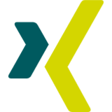
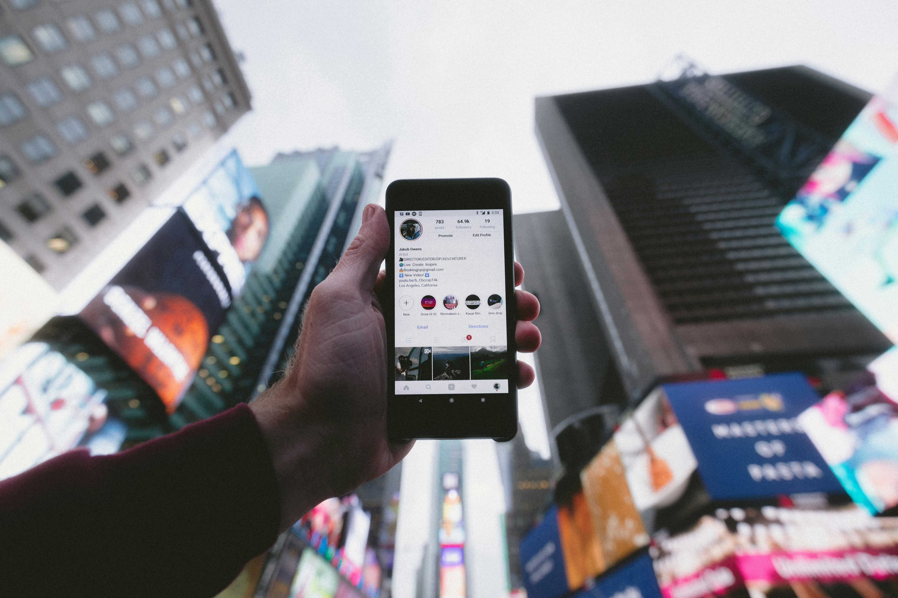

PENDAHULUAN
Latar Belakang
Dalam era digital, sosial media telah menjadi bagian penting dalam hidup kita sehari hari. Dengan adanya platform seperti Twitter, Instagram, TikTok, FaceBook, dan lain sebagainya, sosial media tidak hanya digunakan sebagai sarana untuk berkomunikasi dan bertukar informasi, namun juga untuk rekayasa, bisnis, pendidikan, hingga advokasi sosial. Seperti dalam namanya, sosial media merupakan sarana untuk kita bersosialisasi dengan satu sama yang lain, sering kali tanpa batas dan dengan anonimitas. Namun, dengan adanya kata “tanpa batas” dan “anoniminas”, dapat muncul banyak hal-hal negatif seperti scam, hoax, penipuan, pencurian identitas, cyberbullying dan banyak lagi. Fenomena ini dapat menimbulkan kekhawatiran terkait etika, keamanan, serta dampak terhadap individu maupun masyarakat. Oleh karena itu, sangat penting untuk remaja diberi pendidikan tentang kebijakan dalam bersosial media untuk kebaikan individu dan masyarakat sekitar.
Tujuan
Tujuan web ini adalah mengajak para pembaca untuk menerapkan sikap bijak dalam penggunaan sosial media. Penggunaan media sosial seringkali disalahgunakan untuk menyebarkan kebencian dengan sesama. Media sosial dapat menjadi senjata pemecah persatuan apabila kita tidak bijak dalam menggunakannya. Oleh karena itu, web ini kami buat untuk menyadarkan para pembaca akan pentingnya sikap bijak dalam menggunakan media sosial.
Manfaat
- Manfaat bagi siswi SMP Santa Ursula Jakarta: Menjadi waspada akan bahaya media sosial dan menerapkan sikap bijak dalam menggunakan media sosial.
- Manfaat bagi sekolah: Memastikan semua siswinya mengerti tentang bahaya media sosial dan mengerti cara terbaik untuk bijak menggunakannya.
- Manfaat bagi pihak lain: Bagi orang yang melihat web kami, mereka dapat menambah informasi tentang kebijakan sosial media yang harus diperhatikan.
- Manfaat bagi kelompok: Menambah wawasan tentang bijak menggunakan media sosial sehingga kita juga bisa menjadi sadar akan pentingnya sikap bijak dalam penggunaan media sosial.
PEMBAHASAN
Apa itu Media Sosial?

Media sosial atau biasa disebut sosial media adalah pelantar digital yang memfasilitasi penggunanya untuk saling berinteraksi atau membagikan konten berupa tulisan, foto, video, dll. Selain itu, media sosial juga merupakan salah satu sarana untuk berkomunikasi dan bersosialisasi satu sama lain. Kata media sendiri adalah alat saluran komunikasi. Secara harfiah, media berarti perantara, yaitu perantara antara sumber pesan dengan penerima pesan. Beberapa contoh media adalah film, televisi, diagram, media cetak, komputer, dll. Kata sosial adalah segala hal yang berkaitan dengan masyarakat, manusia, dan kehidupan bermasyarakat. Dalam bahasa latin, kata sosial berarti kawan. Contoh kegiatan sosial adalah seperti kerja bakti, peringatan hari kemerdekaan, kelompok belajar, dll.
Media sosial mempunyai banyak arti berdasarkan beberapa sudut pandang orang. Definisi media sosial menurut para ahli:
- Menurut Andreas Kaplan dan Michael Haenlein, media sosial adalah kumpulan aplikasi berbasis internet yang memungkinkan pengguna untuk bertukar pesan.
- Menurut McGraw Hill Dictionary, media sosial adalah sarana untuk berinteraksi dengan cara menciptakan, berbagi, dan bertukar informasi.
- Menurut Ardiansah dan Maharani, media sosial adalah sarana untuk mempermudah interaksi antar pengguna.
- Menurut Mulawarman, media sosial adalah alat komunikasi untuk berinteraksi.
- Menurut Van Dijk, media sosial adalah platform media yang memfasilitasi pengguna untuk beraktivitas dan berkolaborasi.
- Menurut Philip Kotler dan Keller, media sosial adalah sarana untuk berbagi informasi teks, gambar, video, dan audio.
Media sosial mempunyai berbagai bentuk yang dapat ditemukan pada kehidupan sehari-hari. Ini adalah beberapa contohnya:
- Instagram: aplikasi untuk berbagi tulisan, foto, dan video. Aplikasi ini sangat berguna untuk membagikan momen kehidupan, tren terbaru, dan mempromosikan suatu produk/jasa.

- TikTok: aplikasi untuk membuat video pendek maupun panjang dengan lagu-lagu atau suara yang trending dengan kemampuan untuk menambahkan filter atau efek khusus.

- WhatsApp: aplikasi untuk mengirim pesan dan memudahkan proses komunikasi yang sangat populer digunakan di berbagai belahan dunia.

- Twitter: aplikasi yang digunakan untuk mengirim tweet, yaitu pesan pendek dengan batasan karakter, dan juga dapat mengikuti akun orang lain dan melihat apa yang mereka juga tweet. Twitter berguna untuk mendapatkan informasi terbaru, tren, dan untuk promosi.

Aplikasi media sosial masih ada banyak lagi di dunia ini dengan berbagai macam kepentingannya. Dengan berbagai macam aplikasi media sosial yang ada di dunia, beberapa negara memiliki media platform sendiri yang dominan di negara tersebut. Beberapa contohnya:
- Tiongkok: WeChat adalah platform media sosial yang populer di Tiongkok. Aplikasi tersebut memiliki banyak fitur yaitu pertukaran pesan, berbagi foto dan video, berlangganan majalah/web, dll.

- Rusia: VKontakte adalah platform media sosial yang populer di Rusia. Aplikasi ini dapat memberi layanan untuk berkomunikasi, membagi media, bermain game, dll.
- Jerman: XING adalah platform media sosial yang populer di Jerman. Aplikasi ini dapat digunakan untuk memberi bantuan layanan untuk mencari pekerjaan, mempromosikan pekerjaan, dan membantu orang-orang terhubung di industri bisnis.

Keuntungan dan Manfaat Media Sosial
Sarana komunikasi dan interaksi sosial
Media sosial memungkinkan individu untuk berkomunikasi dengan siapa pun tanpa batasan geografis. Melalui aplikasi seperti WhatsApp, Intagram, Facebook, dan banyak lagi, penguna dapat berkomunikasi dengan berbagi pesan, panggilan video, dan berinteraksi sosial secara daring. Hal ini sangat membantu untuk menjalin hubungan yang erat dengan keluarga, teman, rekan, dan lain lain walaupun mereka tinggal di tempat yang jauh.
Akses cepat terhadap informasi dan berita

Media sosial telah menjadi sarana utama untuk mendapatkan berita bagi banyak orang. Platform seperti twitter, FaceBook, dan Instagram dapat memberikan informasi real-time dan memungkinkan pengguna untuk tetap up to date dengan berita, perkembangan, dan informasi global. Namun, pengguna harus berhati-hati dengan banyaknya berita palsu atau hoax yang bersirkulasi di dalam internet.
Media untuk mengekspresikan diri dan berkarya

Banyak individu menemukan tempat untuk mengekspresikan dirinya di dalam sosial media. Dengan platform seperti YouTube, TikTok, Instagram, dan lain lain, pengguna dapat membagikan karya-karyanya dalam bentuk apapun. Dari gambar, fotografi, video, dan musik, mereka dapat menemukan komunitas yang dapat memotivasi dan menyukai karya-karya mereka. Hal ini dapat mengmbangkan potensi dan bakat individu.
Kesempatan untuk membangun jaringan dan peluang bisnis

Media sosial mulai memiliki peran penting dalam dunia bisnis dan profesional. Banyak perusahaan menggunakan platform seperti LinkedIn untuk mencari calon karyawan dan pengguna juga menggunakannya untuk mencari koneksi dan kerja. Perusahaan kecil dapat menggunakan TikTok atau Instagram untuk memasarkan produk-produk mereka. Selain itu, dengan membesarnya peran sosial media dalam dunia bisnis, mulai adanya marketplace dalam platform sosial media, seperti TikTok shop atau Instagram shopping yang memudahkan transaksi jual beli dengan lebih efisien.
Kerugian dan Dampak Negatif Media Sosial
Penyebaran hoaks dan misinformasi
Salah satu tantangan terbesar dari media sosial adalah penyebaran informasi yang tidak akurat atau hoax. Informasi yang belum terverifikasi dapat menyebar dengan cepat dan mempengaruhi opini publik. Oleh karena itu, penting bagi pengguna untuk selalu mengecek kebenaran informasi sebelum membagikannya.
Cyberbullying dan ujaran kebencian

Kemudahan dalam berkomunikasi dan anominitas di media sosial dapat menyebabkan dampak negatif, seperti cyberbullying dan ujaran kebencian. Banyak pengguna mengalami penrundingan daring yang dapat berdampak buruk pada kesehatan mental dan kesejahteraan psikologis mereka. Oleh kerena itu, dibutuhkan kesadaran untuk menggunakan sosial media dengan baik dan etis serta dengan penuh tanggung jawab.
Kecanduan media sosial dan dampaknya terhadap kesehatan mental

Penggunaan media sosial yang berlebihan dapat menyebabkan kecanduan dan berdampak negatif pada kesehatan mental. Banyak pengguna mengalami gangguan tidur, kecemasan, serta penurunan produktivitas akibat terlalu banyak menghabiskan waktu di dunia maya. Oleh sebab itu, penting untuk mengatur waktu penggunaan media sosial secara seimbang.
Privasi dan keamanan data yang rentan disalahgunakan

Keamanan data pribadi menjadi salah satu perhatian utama dalam penggunaan media sosial. Banyak kasus di mana data pengguna disalahgunakan oleh pihak yang tidak bertanggung jawab atau memiliki intensi yang tidak baik, bisa untuk kepentingan bisnis seperti scam atau spam, maupun kejahatan siber sperti pencurian identitas. Oleh karena itu, pengguna perlu meningkatkan kesadaran tentang pentingnya menjaga privasi dan mengamankan akun media sosial mereka.
Bagaimana Etika Berinternet?
Etika berinternet adalah panduan berperilaku yang sopan dan baik saat menggunakan internet, mirip dengan etika dalam kehidupan sehari-hari, dengan tujuan menciptakan lingkungan online yang aman dan nyaman. Dalam etika berinternet, kita harus menghindari penggunaan bahasa kasar, provokatif, menghina, selain itu juga menghargai pendapat orang lain, dan tidak melakukan cyberbullying atau tindakan yang merugikan orang lain. Hal yang penting untuk diingat juga adalah menghargai privasi orang lain, menghindari penyebaran informasi palsu atau hoaks, menghargai hak cipta, dan menjaga keamanan akun. Dalam penggunaan media sosial, kita harus menghindari penggunaan yang berlebihan yang dapat mengganggu produktivitas dan kesejahteraan. Dengan menjalankan seluruh etika berinternet dengan baik, kita dapat menghindari seluruh konflik dan dampak negatif yang dapat mengurangi kesejahteraan dan persatuan dengan satu sama lain.
Apa itu Literasi Digital?
Di tengah pesatnya perkembangan teknologi digital, hampir seluruh aspek kehidupan kini terhubung dengan dunia maya. Dari pendidikan, pekerjaan, hingga interaksi sosial, semuanya semakin bergantung pada pemanfaatan teknologi. Oleh karena itu, kemampuan untuk memahami, mengevaluasi, dan memanfaatkan informasi digital dengan bijak, yang dikenal sebagai literasi digital, menjadi keterampilan yang sangat penting di era modern ini. Literasi digital adalah kemampuan dan pemahaman dalam menggunakan teknologi dan media digital, mencakup cara mengakses, mengevaluasi, dan mengkomunikasikan informasi, serta memahami risiko dan etika di dunia digital. UNESCO mendefinisikan literasi digital sebagai kemampuan untuk mengakses sumber berita dan mengevaluasi secara kritis, serta menciptakan informasi melalui teknologi digital. Ada empat pilar literasi digital, yaitu digital skill (keterampilan digital), digital culture (budaya digital), digital ethics (etika digital), dan digital safety (keamanan digital).
Manfaat literasi digital adalah dapat meningkatkan kemampuan untuk mencari, menemukan, memilah, dan memahami informasi yang benar dan tepat, mampu mengetahui konten yang positif dan bermanfaat serta konten yang negatif, memahami bagaimana keberadaan internet memengaruhi cara berinteraksi dan berkomunikasi, meningkatkan kemampuan berpikir kritis dan berwawasan, dan memperkuat keamanan data pribadi dan privasi di dunia digital. Dibalik manfaat-manfaat dari literasi digital, terdapat beberapa tantangan literasi digital, yaitu arus informasi yang banyak dan cepat, hoax, ujaran kebencian, dan konten negatif lainnya, serta penyalahgunaan teknologi digital.
Untuk meningkatkan praktik literasi digital, dapat mulai dengan berpikir kritis saat menerima informasi online, menguasai teknik mencari informasi yang akurat, memanfaatkan media sosial untuk belajar dan berkolaborasi, memahami digital culture, dan selalu menjaga keamanan digital.
Bagaimana Implementasi dalam Kehidupan Sehari-Hari?
Literasi digital banyak sekali dilakukan pada kehidupan sehari-hari zaman sekarang. Beberapa contoh literasi digital yang dapat ditemukan tiap hari:
- Berinteraksi di media sosial dengan bijak dan bertanggung jawab.
- Menggunakan aplikasi keuangan untuk transaksi yang aman.
- Menyusun konten digital yang positif dan bermanfaat.
- Menggunakan media internet untuk menggalang dana atau donasi.
- Menggunakan media sosial untuk sarana promosi penjualan.
- Menggunakan grup di media sosial untuk menyebarkan informasi yang tepat dan kredibel.
Literasi digital seringkali berdampak positif bagi kehidupan kita, tetapi ada juga dampak negatifnya. Contoh yang seringkali ditemui adalah penyebaran hoax, cyberbullying, konten negatif yang dibuat, dll. Untuk menghindari hal tersebut berdampak kepada kita, kita harus melakukan literasi digital dengan etika yang baik. Beberapa contoh etika baik dalam berliterasi digital yang harus kita patut turuti adalah:
- Menjaga privasi, kita harus berpikir kritis dengan orang lain yang kita temui di internet, jangan memberikan informasi pribadi kepada orang lain dan selalu berhati-hati saat berliterasi digital.
- Menggunakan bahasa yang sopan, menghindari penggunaan bahasa kasar, menghina, atau menyebarkan kebencian.
- Jangan menyebarkan informasi palsu, selalu verifikasi kebenaran informasi sebelum membagikannya dan menyebarluaskannya.
PENUTUP
Kesimpulan
Dalam era digital, sosial media telah menjadi bagian penting dalam hidup kita sehari hari. Dengan adanya platform seperti Twitter, Instagram, TikTok, FaceBook, dan lain sebagainya, sosial media tidak hanya digunakan sebagai sarana untuk berkomunikasi dan bertukar informasi, namun juga untuk bisnis, pendidikan, hingga advokasi sosial. Dalam kehidupan sehari-hari seringkali ditemukan penggunaan sosial media yang tidak baik. Penyalahgunaan sosial media seperti menerima dan menyebarkan berita hoax dan menebarkan kebencian kepada orang. Sosial media merupakan wadah penyebaran informasi yang sangat cepat sehingga mudah sekali penyebaran informasi hoax. Tingkat rendahnya literasi masyarakat Indonesia sering menjadi sebab mudahnya penyebaran informasi hoax. Dengan kurangnya membaca dan tidak memastikan kebenaran sebelum menyebarkan, hoax akan terus menerus menyebar. Hoax adalah informasi palsu yang bisa mengakibatkan perpecahan dan menimbulkan kontroversi. Selain itu, dalam platform digital, kita masih bisa menemukan banyak sekali ujaran kebencian yang disebarkan oleh orang lain. Sosial media bisa menjadi alat pemecah persatuan apabila kita tidak bijak dalam menggunakannya. Oleh sebab itu, penting bagi kita semua untuk meningkatkan literasi digital dalam penggunaan sosial media pada kehidupan sehari-hari.
Saran
Dari kesimpulan tersebut, berikut ini rekomendasi dan saran yang dapat diberikan dari tim peneliti:
- Bagi Pihak Sekolah
Pada dasarnya, salah satu tujuan adanya sekolah adalah memberikan bimbingan dan ilmu bagi murid-muridnya. Oleh sebab itu, untuk membantu siswi dalam hal bermedia sosial, sekolah dapat memberikan literasi terhadap siswi mengenai etika bermedia sosial yang benar atau apapun yang berkaitan dengan bijak dalam penggunaan media sosial, misalnya dengan memasukkan materi ini sebagai salah satu materi belajar, ataupun dengan mendatangkan pihak lain khusus untuk memberi semacam literasi bermedia sosial, misalnya dengan mengadakan seminar. - Bagi Siswi
Sebagai objek pada penelitian ini, siswi dianjurkan untuk mengetahui lebih banyak mengenai etika menggunakan media sosial yang benar. Siswi diharapkan untuk memiliki kesadaran terhadap dampak negatif dari penggunaan media sosial yang kurang benar, dan berusaha untuk mencegahnya, misalnya dengan mengurangi screen time untuk mencegah kerusakan mata dan kecanduan, bisa memilah mana yang baik dan buruk untuk mencegah terjadinya gangguan secara mental. - Bagi Orang Tua Siswi
Dengan literasi ini, diharapkan untuk orang tua memberikan perhatian dan pengawasan bagi anak. Supaya anak dapat berkembang dengan maksimal. Pastikan anak tidak melakukan aktivitas kurang baik di internet. Selain tiu, membatasi screen time anak, memperhatikan anaknya apakah pantas bebas dalam bermedia sosial. Hal ini akan berdampak besar bagi anak terutama masa depannya.
DAFTAR PUSTAKA
Sari, Astari . dkk. (2018, Desember). Komunikasi dan Media Sosial. Diakses pada 12 Maret 2025 pada pukul 10.40, di https://www.researchgate.net/profile/Astari-Clara-Sari/publication/329998890_KOMUNIKASI_DAN_MEDIA_SOSIAL/links/5c2f3d83299bf12be3ab90d2/KOMUNIKASI-DAN-MEDIA-SOSIAL.pdf
Unair.ac.id (2024, Maret). Kecanduan Media Sosial Termasuk Gangguan Mental? Simak Faktanya. Diakses pada 12 Maret 2025 pada pukul 11.12, di https://unair.ac.id/kecanduan-media-sosial-termasuk-gangguan-mental-simak-faktanya/# ~:text=Secara%20mental%2C%20penggunaan%20media%20sosial,untuk%20mengakses%20medsos%20dan%
Uici.ac.id (2023, April). Ini 7 Media Sosial Paling Banyak Digunakan di Indonesia. Diakses pada 12 Maret 2025 pada pukul 17.51, di https://uici.ac.id/ini-7-media-sosial-paling-banyak-digunakan-di-indonesia/
Vida.id (2024, Juli). Etika Digital: Penerapannya dalam Kehidupan Sehari-hari. Diakses pada 14 Maret 2025 pada pukul 08.19, di https://vida.id/id/blog/etika-digital
Cimahikota.go.id (2017, April). Bijak Memanfaatkan Media Sosial. Diakses pada 14 Maret 2025 pada pukul 08.3, di https://cimahikota.go.id/index.php/artikel/detail/879-bijak-memanfaatkan-media-sosial